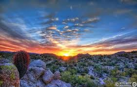

Allison Blaskey
About Me
My name is Allison.I was born and raised in East Tennessee, but now live in Arizona. I am currently studying software development, with the end goal of becoming a software engineer. I have 4 children with my husband of 16 years. I love to read, bake, and spend quality time with my family.
Arizona
Arizona is known as the Grand Canyon State, or the Copper state, due to it being the largest copper-producing state in the U.S.
Arizona is well known for its desert climate, with its iconic saguaro cacti.